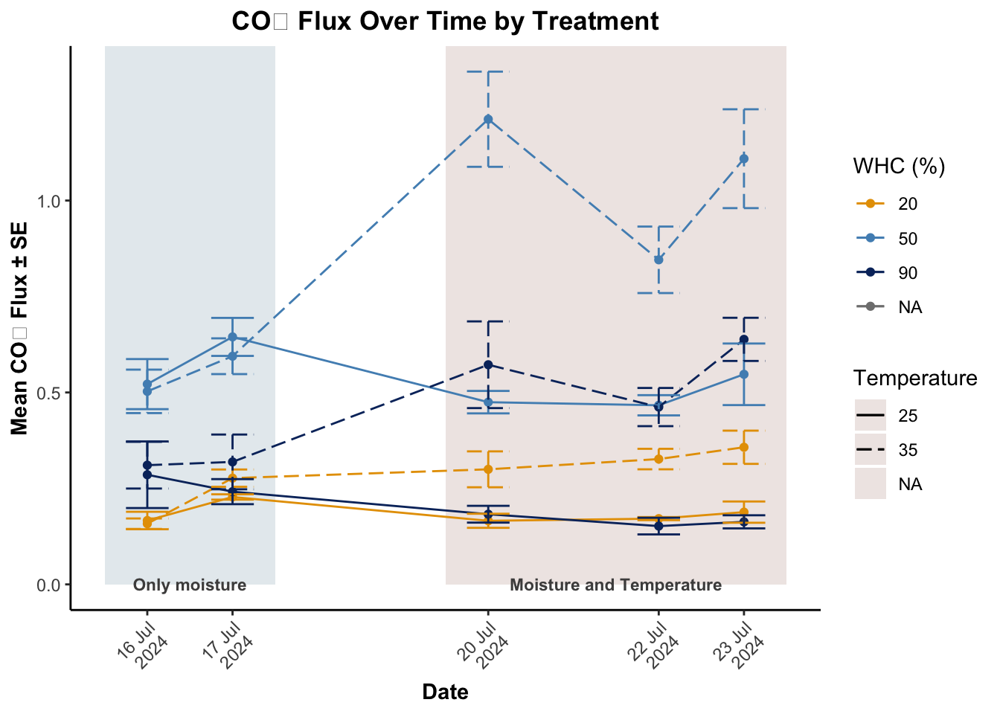
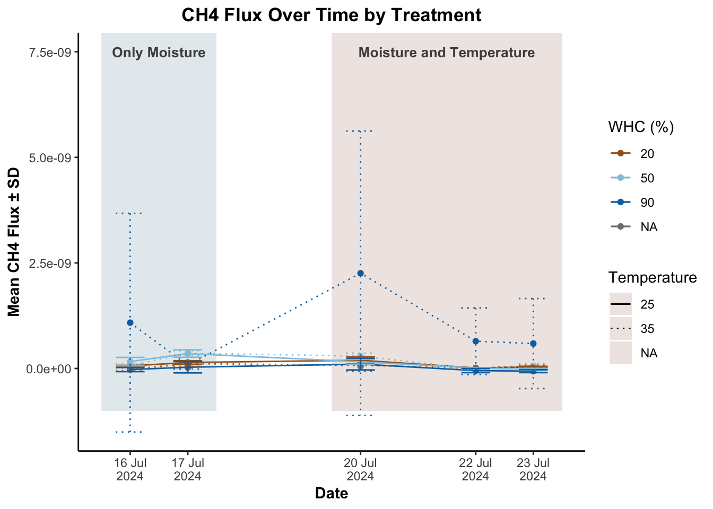
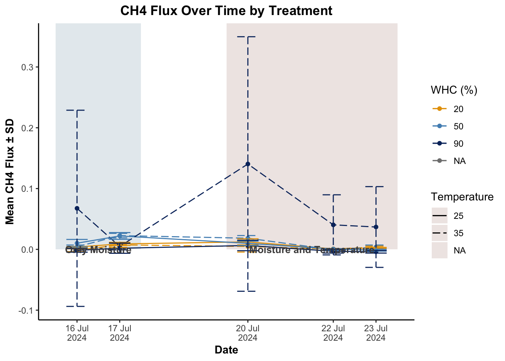
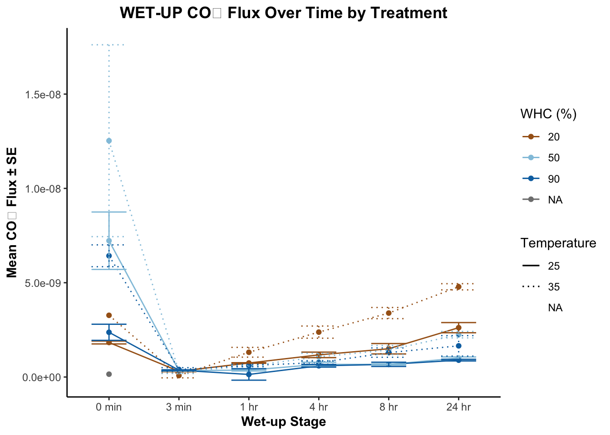
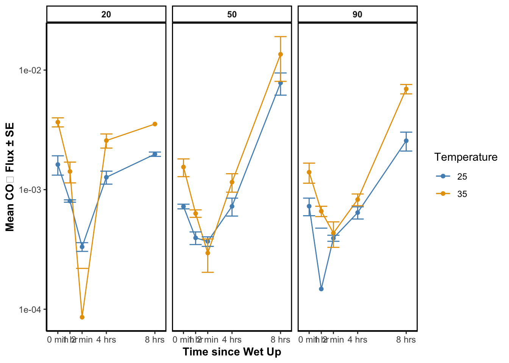
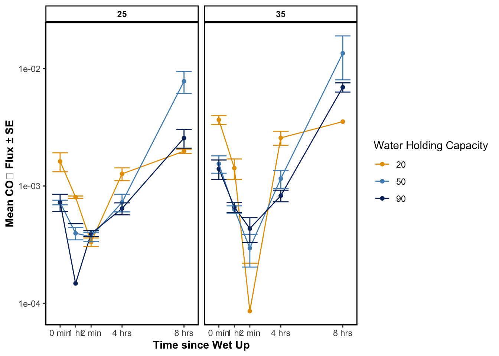

Code
library(forcats)
library(tidyverse)Nibia Becerra Santillan
April 29, 2025
fluxData_treatment_three_jars <- fluxData %>%
mutate(
treatment = case_when(
JarID == "BLANK" ~ "BLANK",
between(as.numeric(JarID), 1, 3) ~ "90-25",
between(as.numeric(JarID), 7, 9) ~ "50-25",
between(as.numeric(JarID), 13, 15) ~ "20-25",
between(as.numeric(JarID), 19, 21) ~ "90-35",
between(as.numeric(JarID), 25, 27) ~ "50-35",
between(as.numeric(JarID), 31, 33) ~ "20-35",
TRUE ~ NA_character_
))
fluxData_treatment_six_jars <- fluxData %>%
mutate(
treatment = case_when(
JarID == "BLANK" ~ "BLANK",
between(as.numeric(JarID), 1, 6) ~ "90-25",
between(as.numeric(JarID), 7, 12) ~ "50-25",
between(as.numeric(JarID), 13, 18) ~ "20-25",
between(as.numeric(JarID), 19, 24) ~ "90-35",
between(as.numeric(JarID), 25, 30) ~ "50-35",
between(as.numeric(JarID), 31, 36) ~ "20-35",
TRUE ~ NA_character_
)
)# Three jars
flux_three_jars <- fluxData_treatment_three_jars %>%
mutate(Dateflux = fluxData_treatment_three_jars$Date) %>%
mutate(Date_corr = mdy(Dateflux))
# Six jars
flux_six_jars <- fluxData_treatment_six_jars %>%
mutate(Dateflux = fluxData_treatment_six_jars$Date) %>%
mutate(Date_corr = mdy(Dateflux))NO_WETUP_six <- flux_six_jars%>%
filter(Date_corr %in% c("2024-07-16", "2024-07-17", "2024-07-20", "2024-07-22", "2024-07-23")) %>%
group_by(treatment, Date_corr) %>%
summarize(
mean_CO2 = mean(finalC02_flux),
sd_CO2 = sd(finalC02_flux),
se_CO2 = sd_CO2 / sqrt(n()), # Standard error for CO2
mean_CH4 = mean(finalCH4_flux),
sd_CH4 = sd(finalCH4_flux),
se_CH4 = sd_CH4 / sqrt(n()), # Standard error for CH4
.groups = "drop"
) %>%
separate(treatment, into = c("WHC", "Temperature"), remove = FALSE) %>%
mutate(
WHC = factor(WHC, levels = c("20", "50", "90")),
Temperature = factor(Temperature, levels = c("25", "35")))NO_WETUP_C02_timeseries <- ggplot(NO_WETUP_six,
aes(x = Date_corr, y = mean_CO2,
group = treatment,
color = WHC,
linetype = Temperature)) +
# Add shading for stages
geom_rect(aes(xmin = as.Date("2024-07-16") - 0.5, xmax = as.Date("2024-07-17") + 0.5 , ymin = 0, ymax = Inf),
fill = "#e6ecef", color = NA) +
geom_rect(aes(xmin = as.Date("2024-07-20") - 0.5, xmax = as.Date("2024-07-23") + 0.5, ymin = 0, ymax = Inf),
fill = "#efe8e6", color = NA) +
geom_point() +
geom_line()+
geom_errorbar(aes(ymin = mean_CO2 - se_CO2,
ymax = mean_CO2 + se_CO2,
color = WHC,
linetype = Temperature),
width = 0.5) +
scale_color_manual(values = custom_colors, name = "WHC (%)") +
scale_linetype_manual(values = line_types, name = "Temperature") +
scale_x_date(breaks = unique(NO_WETUP_six$Date_corr),
date_labels = "%d %b\n%Y") + # Day as number, abbreviated month, and year below
labs(
title = "CO₂ Flux Over Time by Treatment",
x = "Date",
y = "Mean CO₂ Flux ± SE"
) +
theme_classic() +
theme(
legend.position = "right",
plot.title = element_text(hjust = 0.5, face = "bold"),
axis.title = element_text(face = "bold"),
strip.text = element_text(face = "bold"),
axis.text.x = element_text(angle = 45, hjust = 1) # Tilt labels to the side
) +
annotate("text", x = as.Date("2024-07-16") + 0.5, y = 2.3e-8, label = "Only moisture", color = "#4d4c4c", fontface = "bold", size = 3) +
annotate("text", x = as.Date("2024-07-20") + 1.5, y = 2.3e-8, label = "Moisture and Temperature", color = "#4d4c4c", fontface = "bold", , size = 3)
NO_WETUP_C02_timeseries
# ggsave(
# filename = "LAB_C02_ActualData.png",
# plot = NO_WETUP_C02_timeseries,
# path = "~/Desktop/2024-2025/Spring 2025/Honors_Spring/Code/cso066code_BecerraSantillanHonors/TRACEincubation-Figures/Gas",
# width = 8, # adjust width as needed
# height = 6, # adjust height as needed
# dpi = 300 # adjust dpi for resolution
# )Linear mixed model fit by REML ['lmerMod']
Formula: finalC02_flux ~ treatment * phase + (1 | JarID)
Data: flux_six_jars
REML criterion at convergence: -12180.1
Scaled residuals:
Min 1Q Median 3Q Max
-3.0313 -0.3593 -0.0071 0.4020 3.7974
Random effects:
Groups Name Variance Std.Dev.
JarID (Intercept) 3.010e-18 1.735e-09
Residual 1.465e-17 3.828e-09
Number of obs: 353, groups: JarID, 36
Fixed effects:
Estimate Std. Error t value
(Intercept) 2.765e-09 9.253e-10 2.989
treatment20-35 1.841e-09 1.308e-09 1.408
treatment50-25 4.604e-09 1.299e-09 3.544
treatment50-35 9.122e-09 1.303e-09 6.999
treatment90-25 -2.876e-10 1.299e-09 -0.221
treatment90-35 3.539e-09 1.302e-09 2.718
phaseMoistureOnly 3.529e-10 1.255e-09 0.281
treatment20-35:phaseMoistureOnly -1.563e-09 1.775e-09 -0.881
treatment50-25:phaseMoistureOnly 1.608e-09 1.768e-09 0.910
treatment50-35:phaseMoistureOnly -3.474e-09 1.771e-09 -1.961
treatment90-25:phaseMoistureOnly 1.447e-09 1.768e-09 0.818
treatment90-35:phaseMoistureOnly -1.700e-09 1.770e-09 -0.960
Correlation of Fixed Effects:
(Intr) tr20-35 tr50-25 tr50-35 tr90-25 tr90-35 phsMsO t20-35:
trtmnt20-35 -0.707
trtmnt50-25 -0.712 0.504
trtmnt50-35 -0.710 0.502 0.506
trtmnt90-25 -0.712 0.504 0.507 0.506
trtmnt90-35 -0.711 0.503 0.506 0.504 0.506
phsMstrOnly -0.305 0.216 0.217 0.217 0.217 0.217
trt20-35:MO 0.216 -0.305 -0.154 -0.153 -0.154 -0.153 -0.707
trt50-25:MO 0.217 -0.153 -0.298 -0.154 -0.154 -0.154 -0.710 0.502
trt50-35:MO 0.216 -0.153 -0.154 -0.301 -0.154 -0.154 -0.709 0.501
trt90-25:MO 0.217 -0.153 -0.154 -0.154 -0.298 -0.154 -0.710 0.502
trt90-35:MO 0.216 -0.153 -0.154 -0.154 -0.154 -0.300 -0.709 0.501
t50-25: t50-35: t90-25:
trtmnt20-35
trtmnt50-25
trtmnt50-35
trtmnt90-25
trtmnt90-35
phsMstrOnly
trt20-35:MO
trt50-25:MO
trt50-35:MO 0.503
trt90-25:MO 0.504 0.503
trt90-35:MO 0.503 0.502 0.503 treatment_eff phase_eff estimate SE df t.ratio p.value
(20-25) effect (Moisture+Temp) effect -3.07e-10 5.73e-10 319 -0.535 1.0000
(20-35) effect (Moisture+Temp) effect 4.75e-10 5.73e-10 317 0.829 0.9981
(50-25) effect (Moisture+Temp) effect -1.11e-09 5.69e-10 317 -1.952 0.4722
(50-35) effect (Moisture+Temp) effect 1.43e-09 5.71e-10 316 2.505 0.1426
(90-25) effect (Moisture+Temp) effect -1.03e-09 5.69e-10 317 -1.810 0.5881
(90-35) effect (Moisture+Temp) effect 5.43e-10 5.70e-10 318 0.952 0.9934
(20-25) effect MoistureOnly effect 3.07e-10 5.73e-10 319 0.535 1.0000
(20-35) effect MoistureOnly effect -4.75e-10 5.73e-10 317 -0.829 0.9981
(50-25) effect MoistureOnly effect 1.11e-09 5.69e-10 317 1.952 0.4722
(50-35) effect MoistureOnly effect -1.43e-09 5.71e-10 316 -2.505 0.1426
(90-25) effect MoistureOnly effect 1.03e-09 5.69e-10 317 1.810 0.5881
(90-35) effect MoistureOnly effect -5.43e-10 5.70e-10 318 -0.952 0.9934
Degrees-of-freedom method: kenward-roger
P value adjustment: sidak method for 12 tests #CH4
# All in the same plot
NO_WETUP_CH4_timeseries <- ggplot(NO_WETUP_six,
aes(x = Date_corr, y = mean_CH4,
group = treatment,
color = WHC,
linetype = Temperature)) +
geom_rect(aes(xmin = as.Date("2024-07-16") - 0.5, xmax = as.Date("2024-07-17") + 0.5 , ymin = -1e-9, ymax = Inf),
fill = "#e6ecef", color = NA) +
geom_rect(aes(xmin = as.Date("2024-07-20") - 0.5, xmax = as.Date("2024-07-23") + 0.5, ymin = -1e-9, ymax = Inf),
fill = "#efe8e6", color = NA) +
geom_point()+
geom_line() +
geom_errorbar(aes(ymin = mean_CH4 - sd_CH4,
ymax = mean_CH4 + sd_CH4,
color = WHC,
linetype = Temperature),
width = 0.5) +
scale_color_manual(values = custom_colors, name = "WHC (%)") +
scale_linetype_manual(values = line_types, name = "Temperature") +
scale_x_date(breaks = unique(NO_WETUP_six$Date_corr),
date_labels = "%d %b\n%Y") +
labs(
title = "CH4 Flux Over Time by Treatment",
x = "Date",
y = "Mean CH4 Flux ± SD"
) +
theme_classic() +
theme(
legend.position = "right",
plot.title = element_text(hjust = 0.5, face = "bold"),
axis.title = element_text(face = "bold"),
strip.text = element_text(face = "bold")
)+
annotate("text", x = as.Date("2024-07-16") + 0.5, y = 7.5e-9 , label = "Only Moisture", color = "#4d4c4c", fontface = "bold", size = 3.5) +
annotate("text", x = as.Date("2024-07-20")+ 1.5 , y = 7.5e-9, label = "Moisture and Temperature", color = "#4d4c4c", fontface = "bold", size = 3.5)
NO_WETUP_CH4_timeseries
# ggsave(
# filename = "LAB_CH4_ActualData.png",
# plot = NO_WETUP_CH4_timeseries,
# path = "~/Desktop/2024-2025/Spring 2025/Honors_Spring/Code/cso066code_BecerraSantillanHonors/TRACEincubation-Figures/Gas",
# width = 8, # adjust width as needed
# height = 6, # adjust height as needed
# dpi = 300 # adjust dpi for resolution
# )# Different graphs
NO_WETUP_CH4_timeseries_facet <- ggplot(NO_WETUP_six,
aes(x = Date_corr, y = mean_CH4,
group = treatment,
color = WHC,
linetype = Temperature)) +
geom_rect(aes(xmin = as.Date("2024-07-16") - 0.5, xmax = as.Date("2024-07-17") + 0.5 , ymin = -1e-10, ymax = Inf),
fill = "#e6ecef", color = NA) +
geom_rect(aes(xmin = as.Date("2024-07-20") - 0.5, xmax = as.Date("2024-07-23") + 0.5, ymin = -1e-10, ymax = Inf),
fill = "#efe8e6", color = NA) +
geom_point() +
geom_line()+
geom_errorbar(aes(ymin = mean_CH4 - sd_CH4,
ymax = mean_CH4 + sd_CH4,
color = WHC,
linetype = Temperature),
width = 0.5) +
scale_color_manual(values = custom_colors, name = "WHC (%)") +
scale_linetype_manual(values = line_types, name = "Temperature") +
labs(
title = "CH4 Flux Over Time by Treatment",
x = "Date",
y = "Mean CH4 Flux ± SD"
) +
theme_classic() +
theme(
legend.position = "right",
plot.title = element_text(hjust = 0.5, face = "bold"),
axis.title = element_text(face = "bold"),
strip.text = element_text(face = "bold")
) +
facet_wrap(~ treatment, scales = "free_y")
NO_WETUP_CH4_timeseries_facet
# ggsave(
# filename = "LAB_CH4_ActualData_facet.png",
# plot = NO_WETUP_CH4_timeseries_facet,
# path = "~/Desktop/2024-2025/Spring 2025/Honors_Spring/Code/cso066code_BecerraSantillanHonors/TRACEincubation-Figures/Gas",
# width = 8, # adjust width as needed
# height = 6, # adjust height as needed
# dpi = 300 # adjust dpi for resolution
# )Linear mixed model fit by REML ['lmerMod']
Formula: finalCH4_flux ~ treatment * phase + (1 | JarID)
Data: flux_six_jars
REML criterion at convergence: -12474.2
Scaled residuals:
Min 1Q Median 3Q Max
-1.4826 -0.0333 -0.0054 0.0225 17.5400
Random effects:
Groups Name Variance Std.Dev.
JarID (Intercept) 5.321e-20 2.307e-10
Residual 6.751e-18 2.598e-09
Number of obs: 353, groups: JarID, 36
Fixed effects:
Estimate Std. Error t value
(Intercept) 5.410e-11 3.965e-10 0.136
treatment20-35 -3.410e-11 5.633e-10 -0.061
treatment50-25 4.636e-11 5.549e-10 0.084
treatment50-35 5.051e-11 5.603e-10 0.090
treatment90-25 -9.880e-11 5.549e-10 -0.178
treatment90-35 1.544e-09 5.551e-10 2.780
phaseMoistureOnly 4.710e-11 8.431e-10 0.056
treatment20-35:phaseMoistureOnly -2.069e-11 1.194e-09 -0.017
treatment50-25:phaseMoistureOnly 1.105e-10 1.190e-09 0.093
treatment50-35:phaseMoistureOnly 6.352e-11 1.192e-09 0.053
treatment90-25:phaseMoistureOnly -5.616e-13 1.190e-09 0.000
treatment90-35:phaseMoistureOnly -1.064e-09 1.190e-09 -0.894
Correlation of Fixed Effects:
(Intr) tr20-35 tr50-25 tr50-35 tr90-25 tr90-35 phsMsO t20-35:
trtmnt20-35 -0.704
trtmnt50-25 -0.715 0.503
trtmnt50-35 -0.708 0.498 0.506
trtmnt90-25 -0.715 0.503 0.511 0.506
trtmnt90-35 -0.714 0.503 0.510 0.505 0.510
phsMstrOnly -0.444 0.312 0.317 0.314 0.317 0.317
trt20-35:MO 0.313 -0.446 -0.224 -0.222 -0.224 -0.224 -0.706
trt50-25:MO 0.314 -0.221 -0.440 -0.223 -0.225 -0.225 -0.709 0.501
trt50-35:MO 0.314 -0.221 -0.224 -0.443 -0.224 -0.224 -0.707 0.500
trt90-25:MO 0.314 -0.221 -0.225 -0.223 -0.440 -0.225 -0.709 0.501
trt90-35:MO 0.314 -0.221 -0.225 -0.223 -0.225 -0.440 -0.709 0.501
t50-25: t50-35: t90-25:
trtmnt20-35
trtmnt50-25
trtmnt50-35
trtmnt90-25
trtmnt90-35
phsMstrOnly
trt20-35:MO
trt50-25:MO
trt50-35:MO 0.501
trt90-25:MO 0.502 0.501
trt90-35:MO 0.502 0.501 0.502 treatment_eff phase_eff estimate SE df t.ratio p.value
(20-25) effect (Moisture+Temp) effect -7.59e-11 3.85e-10 328 -0.197 1.0000
(20-35) effect (Moisture+Temp) effect -6.56e-11 3.86e-10 325 -0.170 1.0000
(50-25) effect (Moisture+Temp) effect -1.31e-10 3.84e-10 325 -0.342 1.0000
(50-35) effect (Moisture+Temp) effect -1.08e-10 3.85e-10 324 -0.280 1.0000
(90-25) effect (Moisture+Temp) effect -7.56e-11 3.84e-10 325 -0.197 1.0000
(90-35) effect (Moisture+Temp) effect 4.56e-10 3.84e-10 327 1.187 0.9604
(20-25) effect MoistureOnly effect 7.59e-11 3.85e-10 328 0.197 1.0000
(20-35) effect MoistureOnly effect 6.56e-11 3.86e-10 325 0.170 1.0000
(50-25) effect MoistureOnly effect 1.31e-10 3.84e-10 325 0.342 1.0000
(50-35) effect MoistureOnly effect 1.08e-10 3.85e-10 324 0.280 1.0000
(90-25) effect MoistureOnly effect 7.56e-11 3.84e-10 325 0.197 1.0000
(90-35) effect MoistureOnly effect -4.56e-10 3.84e-10 327 -1.187 0.9604
Degrees-of-freedom method: kenward-roger
P value adjustment: sidak method for 12 tests wet_up_cols <- c("PRE_WET", "three_min", "one_hour", "four_hour", "eight_hour", "tweny_four_hour")
#flux_three_jars
WETUP <- flux_three_jars %>%
mutate(across(all_of(wet_up_cols), ~ na_if(., "NA"))) %>%
rowwise() %>%
mutate(
WET_UP_stage = {
values <- c_across(all_of(wet_up_cols))
cols <- wet_up_cols[!is.na(values)]
ifelse(length(cols) > 0, str_c(cols, collapse = ", "), NA)
}
) %>%
ungroup() %>%
mutate(
WET_UP_stage = factor(
WET_UP_stage,
levels = wet_up_cols,
ordered = TRUE
)
)
#WETUPWETUP <- WETUP %>%
select(...1, Model, JarID, Time, Label, finalC02_flux, finalCH4_flux, treatment,Dateflux,Date_corr, WET_UP_stage) %>%
filter(Date_corr %in% c("2024-07-29", "2024-07-30")) %>%
separate(treatment, into = c("WHC", "Temperature"), remove = FALSE) %>%
mutate(
WHC = factor(WHC, levels = c("20", "50", "90")),
Temperature = factor(Temperature, levels = c("25", "35", "30")))
#WETUP_summ
WETUP_summ <- WETUP %>%
group_by(treatment, WET_UP_stage) %>%
summarize(
mean_CO2 = mean(finalC02_flux),
sd_CO2 = sd(finalC02_flux),
se_CO2 = sd_CO2 / sqrt(n()), # Standard error for CO2
mean_CH4 = mean(finalCH4_flux),
sd_CH4 = sd(finalCH4_flux),
se_CH4 = sd_CH4 / sqrt(n()), # Standard error for CH4
.groups = "drop"
) %>%
separate(treatment, into = c("WHC", "Temperature"), remove = FALSE) %>%
mutate(
WHC = factor(WHC, levels = c("20", "50", "90")),
Temperature = factor(Temperature, levels = c("25", "35", "30")))
#WETUP_summ# CO2
WETUP_ActualMeasurements_CO2 <- WETUP_summ %>%
ggplot(aes(x = WET_UP_stage, y = mean_CO2,
group = treatment,
color = WHC,
linetype = Temperature)) +
geom_point() +
geom_line()+
geom_errorbar(
aes(ymin = mean_CO2 - se_CO2, ymax = mean_CO2 + se_CO2),
width = 0.5
) +
scale_color_manual(values = custom_colors, name = "WHC (%)") +
scale_linetype_manual(values = line_types, name = "Temperature") +
scale_x_discrete( labels = c("0 min", "3 min", "1 hr", "4 hr", "8 hr", "24 hr") )+
labs(
title = "WET-UP CO₂ Flux Over Time by Treatment",
x = "Wet-up Stage",
y = "Mean CO₂ Flux ± SE"
) +
theme_classic() +
theme(
legend.position = "right",
plot.title = element_text(hjust = 0.5, face = "bold"),
axis.title = element_text(face = "bold"),
strip.text = element_text(face = "bold")
)
WETUP_ActualMeasurements_CO2 
ggsave(
filename = "LAB_WETUP_ActualMeasurements_CO2.png",
plot = WETUP_ActualMeasurements_CO2,
path = "~/Desktop/2024-2025/Spring 2025/Honors_Spring/Code/cso066code_BecerraSantillanHonors/TRACEincubation-Figures/Gas",
width = 8, # adjust width as needed
height = 6, # adjust height as needed
dpi = 300 # adjust dpi for resolution
)Linear mixed model fit by REML ['lmerMod']
Formula: finalC02_flux ~ WHC * Temperature * WET_UP_stage + (1 | JarID)
Data: WETUP_no_PRE
REML criterion at convergence: -2407.8
Scaled residuals:
Min 1Q Median 3Q Max
-2.92170 -0.33641 0.01368 0.30670 2.99908
Random effects:
Groups Name Variance Std.Dev.
JarID (Intercept) 1.654e-20 1.286e-10
Residual 9.478e-20 3.079e-10
Number of obs: 90, groups: JarID, 18
Fixed effects:
Estimate Std. Error t value
(Intercept) 1.268e-09 1.088e-10 11.658
WHC50 -6.577e-10 1.538e-10 -4.276
WHC90 -7.360e-10 1.538e-10 -4.785
Temperature35 1.121e-09 1.538e-10 7.289
WET_UP_stage.L 1.700e-09 1.777e-10 9.563
WET_UP_stage.Q 3.363e-10 1.777e-10 1.892
WET_UP_stage.C 2.520e-10 1.777e-10 1.418
WET_UP_stage^4 1.195e-10 1.777e-10 0.672
WHC50:Temperature35 -6.113e-10 2.175e-10 -2.810
WHC90:Temperature35 -7.086e-10 2.175e-10 -3.257
WHC50:WET_UP_stage.L -1.184e-09 2.514e-10 -4.711
WHC90:WET_UP_stage.L -1.195e-09 2.514e-10 -4.755
WHC50:WET_UP_stage.Q -2.516e-10 2.514e-10 -1.001
WHC90:WET_UP_stage.Q -1.991e-10 2.514e-10 -0.792
WHC50:WET_UP_stage.C -2.340e-10 2.514e-10 -0.931
WHC90:WET_UP_stage.C -4.234e-10 2.514e-10 -1.685
WHC50:WET_UP_stage^4 2.790e-11 2.514e-10 0.111
WHC90:WET_UP_stage^4 7.031e-11 2.514e-10 0.280
Temperature35:WET_UP_stage.L 1.933e-09 2.514e-10 7.690
Temperature35:WET_UP_stage.Q -2.660e-10 2.514e-10 -1.058
Temperature35:WET_UP_stage.C -7.850e-11 2.514e-10 -0.312
Temperature35:WET_UP_stage^4 -7.952e-11 2.514e-10 -0.316
WHC50:Temperature35:WET_UP_stage.L -9.337e-10 3.555e-10 -2.627
WHC90:Temperature35:WET_UP_stage.L -1.430e-09 3.555e-10 -4.022
WHC50:Temperature35:WET_UP_stage.Q 4.178e-10 3.555e-10 1.175
WHC90:Temperature35:WET_UP_stage.Q 3.082e-10 3.555e-10 0.867
WHC50:Temperature35:WET_UP_stage.C 1.496e-10 3.555e-10 0.421
WHC90:Temperature35:WET_UP_stage.C 2.138e-10 3.555e-10 0.601
WHC50:Temperature35:WET_UP_stage^4 3.668e-11 3.555e-10 0.103
WHC90:Temperature35:WET_UP_stage^4 -2.274e-10 3.555e-10 -0.640 WHC_eff Temperature_eff WET_UP_stage_eff estimate SE df t.ratio
20 effect 25 effect three_min effect 2.91e-10 9.18e-11 48 3.169
50 effect 25 effect three_min effect -9.46e-11 9.18e-11 48 -1.031
90 effect 25 effect three_min effect -1.96e-10 9.18e-11 48 -2.138
20 effect 35 effect three_min effect -2.91e-10 9.18e-11 48 -3.169
50 effect 35 effect three_min effect 9.46e-11 9.18e-11 48 1.031
90 effect 35 effect three_min effect 1.96e-10 9.18e-11 48 2.138
20 effect 25 effect one_hour effect 1.46e-10 9.18e-11 48 1.588
50 effect 25 effect one_hour effect 1.54e-11 9.18e-11 48 0.168
90 effect 25 effect one_hour effect -1.61e-10 9.18e-11 48 -1.755
20 effect 35 effect one_hour effect -1.46e-10 9.18e-11 48 -1.588
50 effect 35 effect one_hour effect -1.54e-11 9.18e-11 48 -0.168
90 effect 35 effect one_hour effect 1.61e-10 9.18e-11 48 1.755
20 effect 25 effect four_hour effect -8.75e-11 9.18e-11 48 -0.953
50 effect 25 effect four_hour effect 1.10e-11 9.18e-11 48 0.120
90 effect 25 effect four_hour effect 7.65e-11 9.18e-11 48 0.833
20 effect 35 effect four_hour effect 8.75e-11 9.18e-11 48 0.953
50 effect 35 effect four_hour effect -1.10e-11 9.18e-11 48 -0.120
90 effect 35 effect four_hour effect -7.65e-11 9.18e-11 48 -0.833
20 effect 25 effect eight_hour effect -1.80e-10 9.18e-11 48 -1.961
50 effect 25 effect eight_hour effect 7.95e-11 9.18e-11 48 0.866
90 effect 25 effect eight_hour effect 1.00e-10 9.18e-11 48 1.095
20 effect 35 effect eight_hour effect 1.80e-10 9.18e-11 48 1.961
50 effect 35 effect eight_hour effect -7.95e-11 9.18e-11 48 -0.866
90 effect 35 effect eight_hour effect -1.00e-10 9.18e-11 48 -1.095
20 effect 25 effect tweny_four_hour effect -1.69e-10 9.18e-11 48 -1.842
50 effect 25 effect tweny_four_hour effect -1.13e-11 9.18e-11 48 -0.124
90 effect 25 effect tweny_four_hour effect 1.80e-10 9.18e-11 48 1.966
20 effect 35 effect tweny_four_hour effect 1.69e-10 9.18e-11 48 1.842
50 effect 35 effect tweny_four_hour effect 1.13e-11 9.18e-11 48 0.124
90 effect 35 effect tweny_four_hour effect -1.80e-10 9.18e-11 48 -1.966
p.value
0.0769
1.0000
0.6835
0.0769
1.0000
0.6835
0.9776
1.0000
0.9317
0.9776
1.0000
0.9317
1.0000
1.0000
1.0000
1.0000
1.0000
1.0000
0.8207
1.0000
0.9999
0.8207
1.0000
0.9999
0.8924
1.0000
0.8174
0.8924
1.0000
0.8174
Degrees-of-freedom method: kenward-roger
P value adjustment: sidak method for 30 tests WETUP_ActualMeasurements_CH4 <- WETUP_summ %>%
ggplot(aes(x = WET_UP_stage, y = mean_CH4,
group = treatment,
color = WHC,
linetype = Temperature)) +
geom_point() +
geom_line()+
geom_errorbar(
aes(ymin = mean_CH4 - se_CH4, ymax = mean_CH4 + se_CH4),
width = 0.5
) +
scale_color_manual(values = custom_colors, name = "WHC (%)") +
scale_linetype_manual(values = line_types, name = "Temperature") +
scale_x_discrete( labels = c("0 min", "3 min", "1 hr", "4 hr", "8 hr", "24 hr") )+
labs(
title = "WET-UP CH₄ Flux Over Time by Treatment",
x = "Stage",
y = "Mean CH₄ Flux ± SE"
) +
theme_classic() +
theme(
legend.position = "right",
plot.title = element_text(hjust = 0.5, face = "bold"),
axis.title = element_text(face = "bold"),
strip.text = element_text(face = "bold")
)
WETUP_ActualMeasurements_CH4
ggsave(
filename = "LAB_WETUP_ActualMeasurements_CH4.png",
plot = WETUP_ActualMeasurements_CH4,
path = "~/Desktop/2024-2025/Spring 2025/Honors_Spring/Code/cso066code_BecerraSantillanHonors/TRACEincubation-Figures/Gas",
width = 8, # adjust width as needed
height = 6, # adjust height as needed
dpi = 300 # adjust dpi for resolution
)WETUP_ActualMeasurements_CH4_facet <- WETUP_summ %>%
ggplot(aes(x = WET_UP_stage, y = mean_CH4,
group = treatment,
color = WHC,
linetype = Temperature)) +
geom_point() +
geom_line()+
geom_errorbar(
aes(ymin = mean_CH4 - se_CH4, ymax = mean_CH4 + se_CH4),
width = 0.5
) +
scale_color_manual(values = custom_colors, name = "WHC (%)") +
scale_linetype_manual(values = line_types, name = "Temperature") +
scale_x_discrete( labels = c("0 min", "3 min", "1 hr", "4 hr", "8 hr", "24 hr") )+
labs(
title = "WET-UP CH₄ Flux Over Time by Treatment",
x = "Stage",
y = "Mean CH₄ Flux ± SE"
) +
theme_classic() +
theme(
legend.position = "right",
plot.title = element_text(hjust = 0.5, face = "bold"),
axis.title = element_text(face = "bold"),
strip.text = element_text(face = "bold")
) +
facet_wrap(~treatment, scales = "free_y")
WETUP_ActualMeasurements_CH4_facet
ggsave(
filename = "LAB_WETUP_ActualMeasurements_CH4_facet.png",
plot = WETUP_ActualMeasurements_CH4_facet,
path = "~/Desktop/2024-2025/Spring 2025/Honors_Spring/Code/cso066code_BecerraSantillanHonors/TRACEincubation-Figures/Gas",
width = 8, # adjust width as needed
height = 6, # adjust height as needed
dpi = 300 # adjust dpi for resolution
)Linear mixed model fit by REML ['lmerMod']
Formula: finalCH4_flux ~ WHC * Temperature * WET_UP_stage + (1 | JarID)
Data: WETUP_no_PRE
REML criterion at convergence: -2410.2
Scaled residuals:
Min 1Q Median 3Q Max
-4.8482 -0.0190 -0.0003 0.0215 2.4270
Random effects:
Groups Name Variance Std.Dev.
JarID (Intercept) 0.000e+00 0.000e+00
Residual 1.031e-19 3.211e-10
Number of obs: 90, groups: JarID, 18
Fixed effects:
Estimate Std. Error t value
(Intercept) 2.217e-11 8.292e-11 0.267
WHC50 1.481e-11 1.173e-10 0.126
WHC90 -1.483e-10 1.173e-10 -1.264
Temperature35 -8.370e-11 1.173e-10 -0.714
WET_UP_stage.L -2.227e-11 1.854e-10 -0.120
WET_UP_stage.Q 1.709e-11 1.854e-10 0.092
WET_UP_stage.C 2.262e-11 1.854e-10 0.122
WET_UP_stage^4 1.346e-11 1.854e-10 0.073
WHC50:Temperature35 8.200e-11 1.658e-10 0.495
WHC90:Temperature35 1.540e-10 1.658e-10 0.929
WHC50:WET_UP_stage.L -2.198e-11 2.622e-10 -0.084
WHC90:WET_UP_stage.L 2.668e-10 2.622e-10 1.018
WHC50:WET_UP_stage.Q 2.109e-11 2.622e-10 0.080
WHC90:WET_UP_stage.Q 2.256e-10 2.622e-10 0.861
WHC50:WET_UP_stage.C -4.069e-11 2.622e-10 -0.155
WHC90:WET_UP_stage.C -5.091e-10 2.622e-10 -1.942
WHC50:WET_UP_stage^4 -1.003e-11 2.622e-10 -0.038
WHC90:WET_UP_stage^4 3.581e-10 2.622e-10 1.366
Temperature35:WET_UP_stage.L 3.305e-10 2.622e-10 1.260
Temperature35:WET_UP_stage.Q -2.841e-10 2.622e-10 -1.084
Temperature35:WET_UP_stage.C 1.287e-10 2.622e-10 0.491
Temperature35:WET_UP_stage^4 -8.132e-11 2.622e-10 -0.310
WHC50:Temperature35:WET_UP_stage.L -2.922e-10 3.708e-10 -0.788
WHC90:Temperature35:WET_UP_stage.L -9.038e-10 3.708e-10 -2.437
WHC50:Temperature35:WET_UP_stage.Q 2.516e-10 3.708e-10 0.679
WHC90:Temperature35:WET_UP_stage.Q -2.622e-10 3.708e-10 -0.707
WHC50:Temperature35:WET_UP_stage.C -1.124e-10 3.708e-10 -0.303
WHC90:Temperature35:WET_UP_stage.C 1.569e-10 3.708e-10 0.423
WHC50:Temperature35:WET_UP_stage^4 6.712e-11 3.708e-10 0.181
WHC90:Temperature35:WET_UP_stage^4 -3.677e-10 3.708e-10 -0.992optimizer (nloptwrap) convergence code: 0 (OK)
boundary (singular) fit: see help('isSingular') WHC_eff Temperature_eff WET_UP_stage_eff estimate SE df t.ratio
20 effect 25 effect three_min effect 1.17e-10 9.57e-11 48 1.220
50 effect 25 effect three_min effect -6.46e-11 9.57e-11 48 -0.675
90 effect 25 effect three_min effect -5.22e-11 9.57e-11 48 -0.545
20 effect 35 effect three_min effect -1.17e-10 9.57e-11 48 -1.220
50 effect 35 effect three_min effect 6.46e-11 9.57e-11 48 0.675
90 effect 35 effect three_min effect 5.22e-11 9.57e-11 48 0.545
20 effect 25 effect one_hour effect 9.21e-11 9.57e-11 48 0.962
50 effect 25 effect one_hour effect 1.31e-10 9.57e-11 48 1.370
90 effect 25 effect one_hour effect -2.23e-10 9.57e-11 48 -2.332
20 effect 35 effect one_hour effect -9.21e-11 9.57e-11 48 -0.962
50 effect 35 effect one_hour effect -1.31e-10 9.57e-11 48 -1.370
90 effect 35 effect one_hour effect 2.23e-10 9.57e-11 48 2.332
20 effect 25 effect four_hour effect -3.50e-11 9.57e-11 48 -0.365
50 effect 25 effect four_hour effect 8.19e-12 9.57e-11 48 0.086
90 effect 25 effect four_hour effect 2.68e-11 9.57e-11 48 0.280
20 effect 35 effect four_hour effect 3.50e-11 9.57e-11 48 0.365
50 effect 35 effect four_hour effect -8.19e-12 9.57e-11 48 -0.086
90 effect 35 effect four_hour effect -2.68e-11 9.57e-11 48 -0.280
20 effect 25 effect eight_hour effect -4.33e-11 9.57e-11 48 -0.452
50 effect 25 effect eight_hour effect 1.70e-11 9.57e-11 48 0.178
90 effect 25 effect eight_hour effect 2.63e-11 9.57e-11 48 0.274
20 effect 35 effect eight_hour effect 4.33e-11 9.57e-11 48 0.452
50 effect 35 effect eight_hour effect -1.70e-11 9.57e-11 48 -0.178
90 effect 35 effect eight_hour effect -2.63e-11 9.57e-11 48 -0.274
20 effect 25 effect tweny_four_hour effect -1.31e-10 9.57e-11 48 -1.365
50 effect 25 effect tweny_four_hour effect -9.17e-11 9.57e-11 48 -0.958
90 effect 25 effect tweny_four_hour effect 2.22e-10 9.57e-11 48 2.323
20 effect 35 effect tweny_four_hour effect 1.31e-10 9.57e-11 48 1.365
50 effect 35 effect tweny_four_hour effect 9.17e-11 9.57e-11 48 0.958
90 effect 35 effect tweny_four_hour effect -2.22e-10 9.57e-11 48 -2.323
p.value
0.9996
1.0000
1.0000
0.9996
1.0000
1.0000
1.0000
0.9971
0.5165
1.0000
0.9971
0.5165
1.0000
1.0000
1.0000
1.0000
1.0000
1.0000
1.0000
1.0000
1.0000
1.0000
1.0000
1.0000
0.9973
1.0000
0.5246
0.9973
1.0000
0.5246
Degrees-of-freedom method: kenward-roger
P value adjustment: sidak method for 30 tests